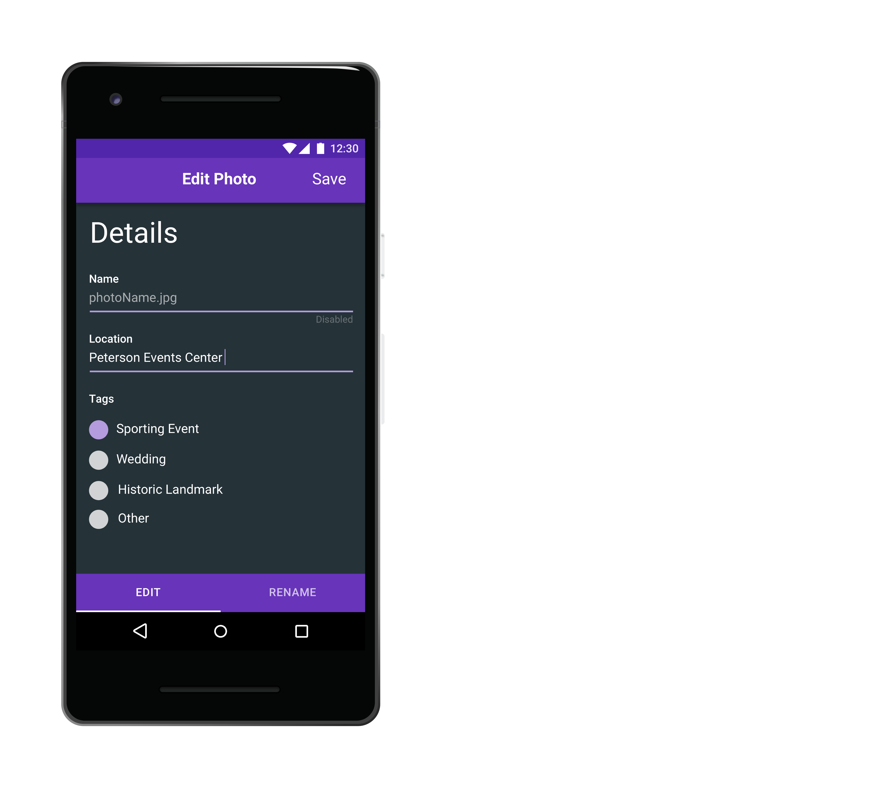
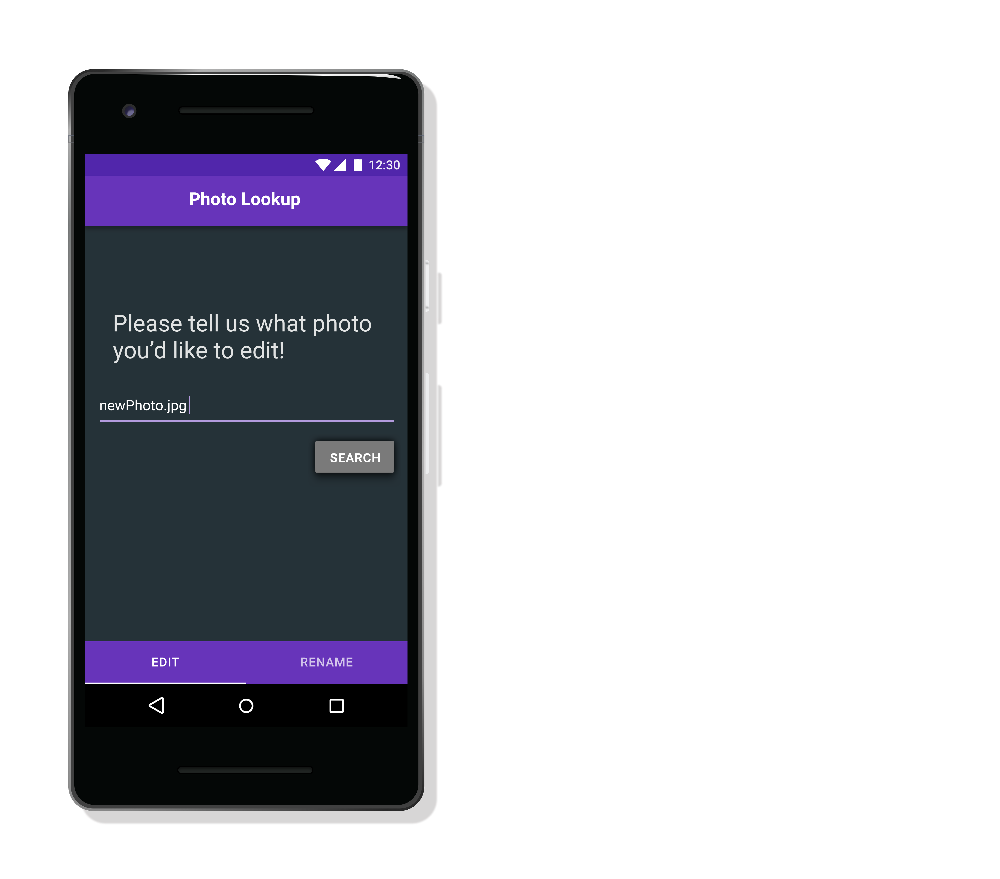

Photo Editor
I was part of a team that built and developed a photo editing app for a project at Pitt. Photo Editor is an Android application that allows a user to edit photos to their liking. My role on this project was to be the lead contributor and creator of the application's UI and design. I created all of the mockups for the application using Sketch for Mac. My emphasis was one of simplicity, where the user is able to achieve their goal in just a few clicks. With consistent colors, layouts, and Android elements, Photo Editor provides the user an easy way to edit and view photos the way that they want to.




- DATE: Spring 2018
- FRAMEWORKS USED: Android, Java, Sketch
- GIT REPO: CS1699/Photo Editor